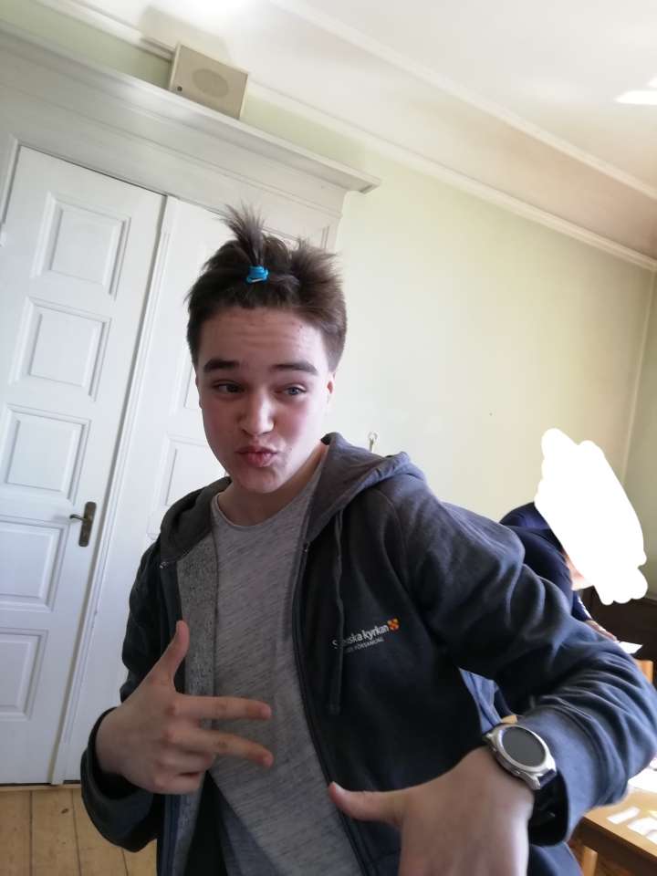

Jag föddes på Malmö sjukhus den 16 augusti 2002. Efter mina första två år i livet så flyttade jag och mina förälldrar till en lägenhet i Hagsätra. Kort därefter fick jag en lillasyster som sedan fick namnet Emily. Ett år senare kom Marcus, min lillebror och då kände mina päron att det var dags för en större lägenhet. Vi flyttade ännu en gång till en större lägenhet i Hagsätra där vi sedan bodde fram tills jag skulle börja i trean på grundskolan. Sen kom ännu ett syskon, nämligen Elvira och nu bestämde sig mina förälldrar att det var dags för ett hus. Vi har nu bott i ett gult hus precis utanför Järna i 9 år.
Jag går på NTI eftersom att det är ett bra ställe för inlärning av kunskaper inom programering och spelutveckling
Efter gymnasiet ska jag plugga vidare till spelutvecklare och sedan skapa ett spelföretag.